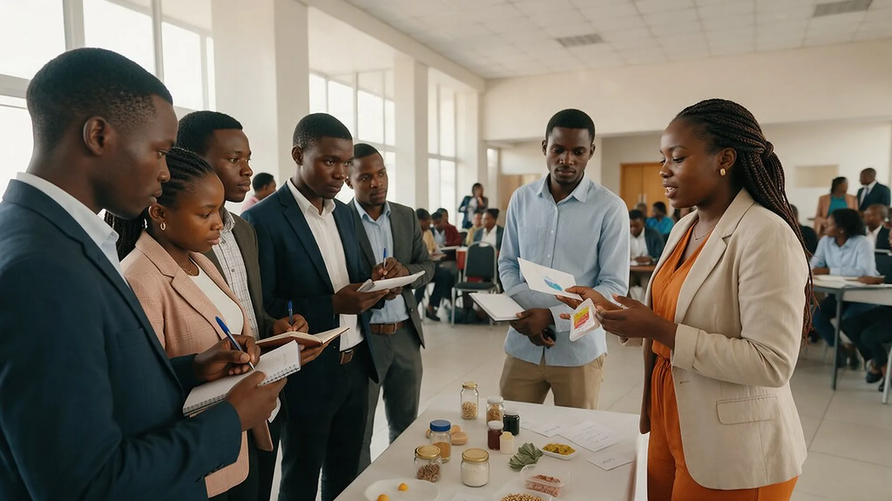
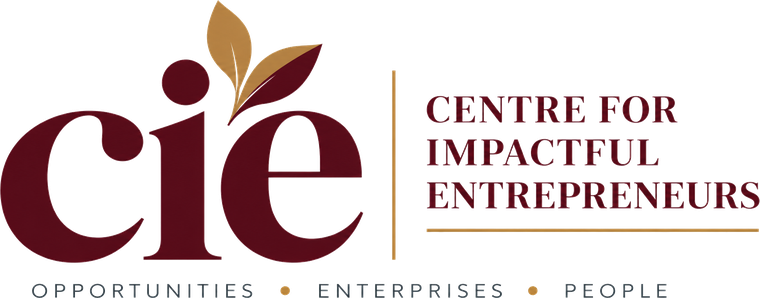
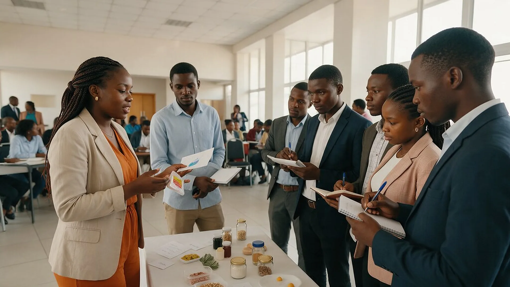

Turning promising ideas into productive enterprises.
The Centre for Impactful Entrepreneurs (CIE) mobilises entrepreneurial ideas, supports enterprise development and connects people with the knowledge, partnerships and opportunities needed to build commercially viable businesses in Zimbabwe.

Who CIE is
A platform for enterprise development.
CIE is an enterprise development and industrialisation initiative in Zimbabwe. It brings together entrepreneurs, industry, financial institutions, investors, development finance institutions, technical specialists and strategic partners to support enterprise growth, local manufacturing, value addition and sustainable economic development.
Mission
To mobilise, nurture and empower entrepreneurs by creating pathways through which business ideas can be developed into viable enterprises, industrial projects and sustainable economic opportunities.
Vision
To become a recognised platform for entrepreneurship, enterprise development and industrial project origination, contributing to a more productive, innovative and industrialised Zimbabwe.
What CIE does
Practical support for enterprise development.
Enterprise development
Identifying promising ideas and supporting early commercial concept development.
Training & incubation
Building entrepreneurship capabilities through training, mentorship and incubation initiatives.
Industrial project origination
Finding productive-sector opportunities that address market gaps and strengthen local production.
Industry engagement
Connecting entrepreneurs, businesses and stakeholders in practical dialogue about enterprise growth.
Partnerships & access
Building relationships that improve access to expertise, markets and potential sources of finance.
Forums & roadshows
Bringing ideas, businesses and industry together through workshops, forums and project showcases.
How ideas progress
From an idea to a stronger business opportunity.
Share your idea
Tell CIE what you want to build and the challenge or opportunity it addresses.
Initial review
Suitable submissions are assessed against market demand, feasibility, impact and readiness.
Identify the right support
Next steps may include training, mentorship, incubation, further preparation or a partner referral.
Develop the opportunity
Promising concepts may progress towards stronger business plans and investment preparation, subject to further assessment.
A registered company or completed business plan is not required for an initial submission. Submitting an idea does not guarantee programme admission, funding or investment.
Focus areas
Supporting Zimbabwe’s productive economy.
CIE prioritises commercially promising opportunities that contribute to domestic value addition, industrialisation, import substitution and regional trade. Sector relevance alone does not determine acceptance: projects need market demand, credible operating models and feasibility.
- Manufacturing
- Agro-processing
- Mineral beneficiation
- Packaging & industrial inputs
- Import substitution
- Export-oriented enterprises
CIE and Chisi
Complementary roles. Distinct mandates.
Centre for Impactful Entrepreneurs
- Outreach and idea mobilisation
- Entrepreneurship development and training
- Mentorship and incubation
- Identifying promising projects
Chisi Capital Partners
- Commercial assessment
- Project preparation
- Investment structuring
- Engagement with potential capital providers, where appropriate
Contact CIE directly at info@cie.co.zw.
The two organisations have distinct mandates. Any referral from CIE to Chisi Capital Partners, or any next step, remains subject to assessment and applicable requirements.
